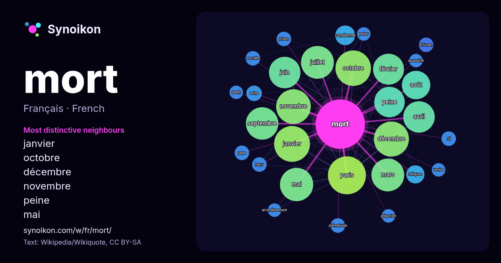

Français · mot populaire
mort
“death” · Les mots trouvés autour de lui dans 973 occurrences issues de Wikipédia, Wikiquote.

Voisins les plus spécifiques
- janvier 30×
- octobre 30×
- décembre 29×
- novembre 29×
- peine 27×
- mai 25×
- juillet 25×
- avril 24×
- septembre 24×
- février 24×
- mars 24×
- juin 22×
- août 20×
- paris 17×
- condamné 12×
- reliques 11×
- seine 8.3×
- shuman 8.0×
- prématurée 7.9×
- socrate 7.9×
× = combien de fois plus souvent que dans le texte général de Wikipédia.
Voisins les plus fréquents
- paris 48
- janvier 43
- octobre 42
- décembre 41
- novembre 40
- mai 37
- juillet 36
- mars 36
- septembre 35
- avril 33
- juin 33
- février 32
- peine 31
- août 27
- france 21
- film 16
- vie 14
- condamné 13
- reliques 11
- états-unis 10
En contexte
- article concerne le sens commun du mot « mort » (fin de la vie). Pour les autres significations, voir Mort (homonymie). « Décès », « Trépas » et « Mortel » Wikipedia snippets · Mort
- (comment ?) selon les recommandations des projets correspondants. MoRT Albums de Blut aus Nord MoRT est le cinquième album studio du groupe de black metal avant-gardiste Wikipedia snippets · MoRT
- La peine de mort aux États-Unis est appliquée au niveau fédéral, par la justice militaire ainsi que dans vingt-sept des cinquante États fédérés que compte Wikipedia snippets · Peine de mort aux États-Unis
- Touvier, né le 3 avril 1915 à Saint-Vincent-sur-Jabron (Basses-Alpes) et mort le 17 juillet 1996 à la prison de Fresnes (Val-de-Marne), est un ancien agent Wikipedia snippets · Paul Touvier
- homonymes, voir Shuman. Mort Shuman Mort Shuman, de son vrai nom Mortimer Shuman, né le 12 novembre 1938 à New York et mort le 2 novembre 1991 à Londres Wikipedia snippets · Mort Shuman
- modification de cette page a été faite le 25 septembre 2026 à 13:17. La mort de Thomas Perotto est une affaire criminelle française qui a eu lieu le 19 Wikipedia snippets · Mort de Thomas Perotto
- Cette liste de morts insolites regroupe des décès ayant été considérés comme insolites ou sortant de l'ordinaire par des sources ou auteurs qui les ont Wikipedia snippets · Liste de morts insolites
- בראנט), né le 1er février 1947 à Nicosie (Colonie britannique de Chypre) et mort le 25 avril 1975 à Boulogne-Billancourt (Hauts-de-Seine), est un chanteur Wikipedia snippets · Mike Brant
Autres mots
- art
- automne
- carte
- chanson
- chat
- chemin
- cheval
- chien
- climat
- cloche
- cœur
- dieu
- désert
- eau
- famille
- forêt
- histoire
- hiver
- horloge
- jardin
- langue
- miel
- miroir
- monnaie
- montagne
- mère
- nature
- nourriture
- ombre
- pain
- pluie
- pont
- pouvoir
- printemps
- santé
- science
- sel
- silence
- temps
- tempête
- thé
- train
- travail
- trésor
- vie
- ville
- vérité
- étoile
- île
Précalculé le 2026-10-09 avec les paramètres par défaut (±5 mots, corpus moyen). La carte interactive peut l’actualiser avec des données en direct.
Interface traduite automatiquement ; corrections bienvenues.